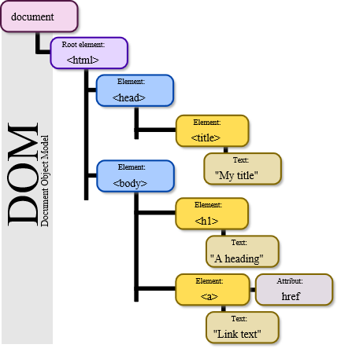

ECMAScript is the scripting language standardized by Ecma International in the ECMA-262 specification and ISO/IEC 16262. The language is widely used for client-side scripting on the web, in the form of several well-known implementations such as JavaScript, JScript and ActionScript.
The Document Object Model (DOM) is an application programming interface (API) for XML that was extended for use in HTML. The DOM maps out an entire page as a hierarchy of nodes. Each part of an HTML or XML page is a type of a node containing different kinds of data.
Primarily, the BOM deals with the browser window and frames, but generally any browser - specific extension to JavaScript is considered to be a part of the BOM. The following are some such extensions:
When working with reference values, properties and methods may be added, changed, or deleted at any time.
var person = new Object();
person.name = “Nicholas”;
alert(person.name); //”Nicholas”
Primitive values can’t have properties added to them even though attempting to do so won’t cause an error.
var name = “Nicholas”;
name.age = 27;
alert(name.age); //undefined
When a primitive value is assigned from one variable to another, the value stored on the stack is created and copied into the location for the new variable.
var num1 = 5;
var num2 = num1;When a reference value is assigned from one variable to another, the value stored on the stack is also copied into the location for the new variable. The difference is that this value is actually a pointer to an object stored on the heap. Once the operation is complete, two variables point to exactly the same object, so changes to one are reflected on the other
var obj1 = new Object();
var obj2 = obj1;
obj1.name = “Nicholas”;
alert(obj2.name); //”Nicholas”All function arguments in ECMAScript are passed by value. This means that the value outside of the function is copied into an argument on the inside of the function the same way a value is copied from one variable to another.
function addTen(num) {
num += 10;
return num;
}
var count = 20;
var result = addTen(count);
alert(count); //20 - no change
alert(result); //30function setName(obj) {
obj.name = “Nicholas”;
}
var person = new Object();
setName(person);
alert(person.name); //”Nicholas”function setName(obj) {
obj.name = “Nicholas”;
obj = new Object();
obj.name = “Greg”;
}
var person = new Object();
setName(person);
alert(person.name); //”Nicholas”The typeof operator, introduced in the previous chapter, is the best way to determine if a variable is a primitive type.
var s = “Nicholas”;
var b = true;
var i = 22;
var u;
var n = null;
var o = new Object();
alert(typeof s); //string
alert(typeof i); //number
alert(typeof b); //boolean
alert(typeof u); //undefined
alert(typeof n); //object
alert(typeof o); //objectThe instanceof operator returns true if the variable is an instance of the given reference type (identified by its constructor function).
alert(person instanceof Object); //is the variable person an Object?
alert(colors instanceof Array); //is the variable colors an Array?
alert(pattern instanceof RegExp); //is the variable pattern a RegExp?The execution context of a variable or function defines what other data it has access to, as well as how it should behave. Each execution context has an associated variable object upon which all of its defined variables and functions exist. This object is not accessible by code but is used behind the scenes to handle data.
{kind=link}